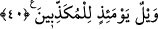

39. (Azaptan kurtulmanız için) bir hileniz varsa, gösterin bana hilenizi!
“Eğer” sizlere gelecek azâbı kendinizden savuşturabileceğiniz “bir hileniz varsa onu
Bana yapın.” Âyetin zâhirine göre bu, Allah’tan kâfirlere yöneltilmiş bir hitâbdır.
Âyette yer alan “kîdûni” ifâdesinin kökü “ keyd” şeklindedir. Bu kökün anlamı hile,
çâre, herhangi bir şeyden kurtulmak için insanın becerebileceği herhangi bir numara
demektir. Bu açıklamaların ışığında âyet-i kerîmeye mânâ vermek gerekirse şöyle
diyebiliriz: Sizler kendi canınızı kurtarmak için haydi hilenizi yapın ve gücünüz
yetiyorsa benim azâbımdan kurtulun. Çünkü sizlerin taklîd ettiğiniz kimseler ve ardından
gittiğiniz şahıslar işte huzûrumda hazırdırlar.
Allah Teâlâ’ya herhangi bir hîle yaparak ve hikâye anlatarak kendinizden azâbı
uzaklaştırmazsınız.
Hîle ve tuzakla Allah’ın azâbı uzaklaştırılamaz
İhlâs ve niyâz, seher vakti inlemek gerekir
Her iki âlemin mülkü bir “âh” ile satın alınabilir
Böyle bir amelden gâfil olma, yoksa pişmanlık içinde hakîr kalırsın.
Yukarda okuduğumuz “bir hileniz varsa kurtulmak için onu bana yapın” şeklindeki
emir, buna muhâtapları küçük düşürmek için verilmiş bir emirdir. Karşıdaki kimselerin
âciz olduklarını vurgulamak için yapılmıştır. Yine bu sesleniş onların dünyada iken
müminlere karşı kurmuş oldukları tuzağı vurgulamak içindir. Ayrıca burada onlara,
dünyada iken üzerlerindeki hakları ödemedikleri, insanların haklarını çeşitli hile, desise
ve numaralarla çiğnedikleri hatırlatılarak utandırılmaktadır. Bundan dolayı Allah onlara
tam da her türlü hileyi yapmaktan kesildikleri, her türlü numarayı çevirme imkânları
kalmadığı ve bunu farkettikleri bir anda hitâb etmekte ve şöyle demektedir: Eğer
elinizden gelen bir hileniz varsa buyrun o hilenizi bana karşı yapın. Bu hilenizi yapın.
Çünkü ben size şimdi uyarıcı bir ifâdede bulunuyorum, sizleri utandırıyorum ve hile
yapmaktan âciz olduğunuzu size gösteriyorum. Bu çeşit bir sözü ancak ve ancak
muhatabının âciz olduğunu kesinlikle bilen söyler.
Bâzı tefsirlerde bu âyet şöyle tefsir olunuyor: Eğer sizin kendinize faydalı bir hileniz,
bir çâreniz varsa buyrun onu bana karşı yapın.
40. O gün, (hakîkatleri) yalan sayanların vay hâline!
Çünkü onların Allah Teâlâ’nın azâbından yakalarını kurtarabilmeleri için yapacakları
herhangi bir hileleri ve numaraları yoktur.